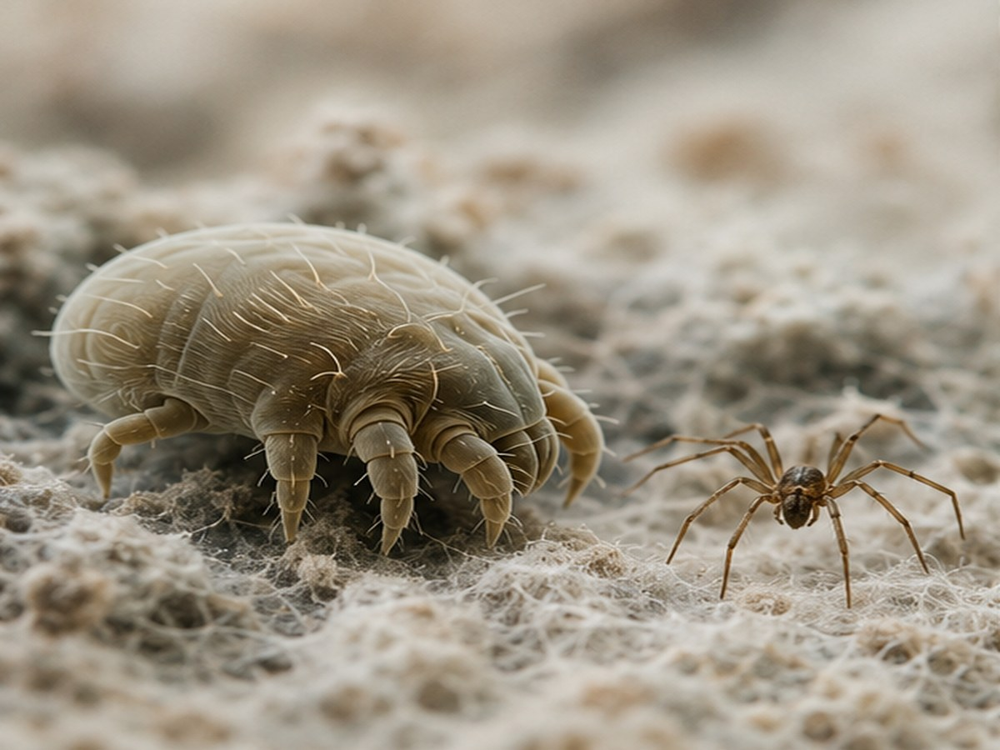
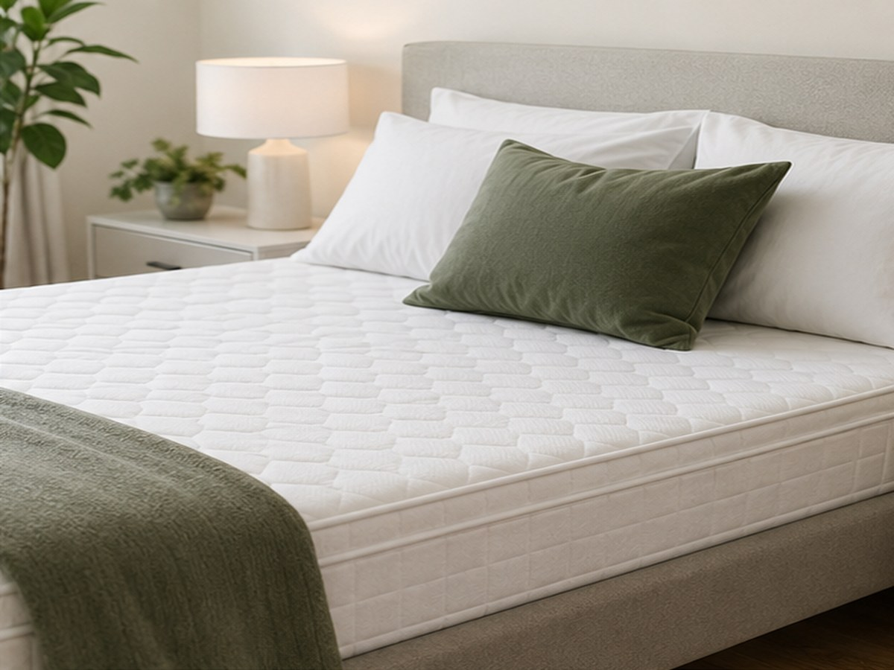
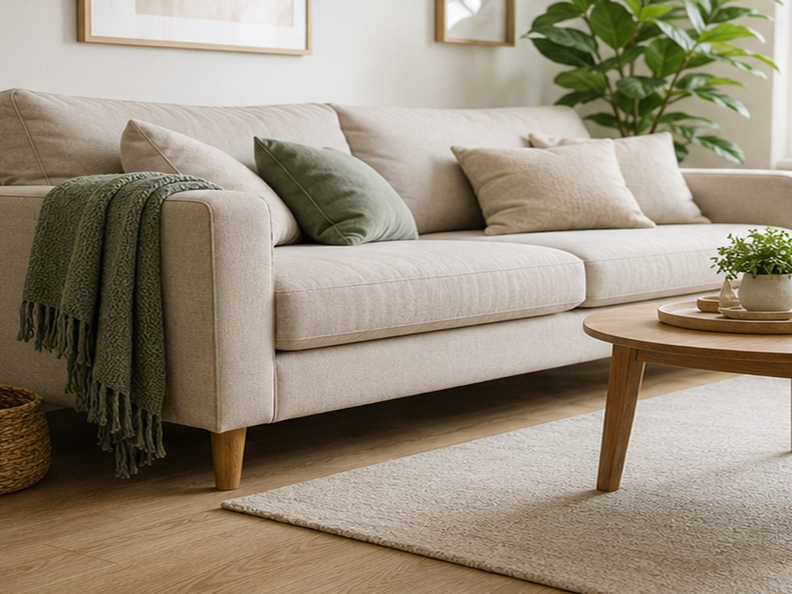

Élősködők és Allergének
Az Ecozone-tech eljárás hatékonyan pusztítja el a poratkákat, pókokat, rovarokat és más élősködőket, valamint semlegesíti az allergiát kiváltó ürüléküket. Különösen ajánlott allergiások és asztmások számára.
Poratkáktól a pókokig
A poratkák mikroszkopikus méretű élőlények, melyek leginkább meleg, párás környezetben élnek. Bár maguk az atkák nem károsak, az általuk kibocsátott allergének súlyos allergiás reakciókat válthatnak ki. A pókok és más rovarok, mint a bolhák és csótányok, szintén megtelepedhetnek a bútorokban és a falak repedéseiben.

Az ózon mindent átható ereje
Az ózon gáz halmazállapotú és a levegőnél nehezebb, így bejut minden apró résbe, a szövetek és kárpitok mélyére, valamint a matracok belsejébe. Rövid idő alatt elpusztítja a poratkákat, pókokat és más élősködőket, roncsolva légzőszervüket. Az eljárás vegyszermentes és veszélytelen az emberre.

Allergének és higiénia
Az ózon egyedülálló módon oxidálja az atkák ürülékét is, amely a porallergia tüneteinek fő okozója. A hagyományos takarítás gyakran nem képes teljesen semlegesíteni ezeket az allergéneket. Az ózonos kezelés után a hálószoba és az ágynemű higiénikus és friss illatú lesz.

Fontos tippek
- Az ózonos fertőtlenítés különösen ajánlott allergiás, asztmás és légúti betegségekben szenvedők számára.
- A rendszeres kezelés segíthet megelőzni a poratka-populáció, valamint a pókok és rovarok elszaporodását.
- Az eljárás során sem a felületek, sem a textíliák nem károsodnak, így teljes biztonsággal alkalmazható otthonában.